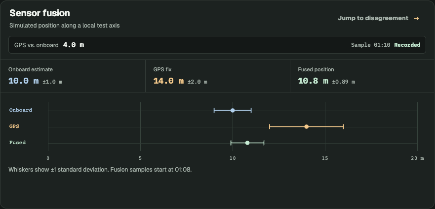
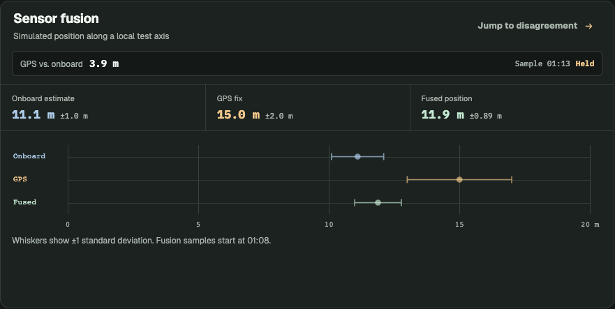
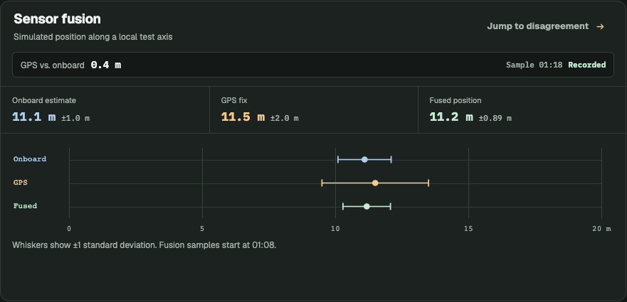

The handoff problem
A test vehicle paused. The replay attributed the stop to the operator. The simulator recorded a different account. If you weren't at the test, which record would you trust, and could you reproduce the discrepancy on your own?
I built a replay that keeps the vehicle record, the interface label, and the field note attached to their sources. The prototype uses a fictional supply run to explore whether that evidence can travel intact from the field to software engineering.
Why Overland AI
Overland AI builds ground autonomy software and vehicles. OverDrive handles onboard perception and driving. SPARK brings the supporting hardware and software to existing vehicles. OverWatch gives operators a way to assign tasks and view vehicle status. Overland has identified field support and operational integration as growth priorities. That makes the handoff between field testing and software engineering a workflow worth investigating. DIU product catalog · SPARK announcement · Overland funding priorities
Follow one interrupted run
- Scripted pause. Simulator event E-031 records the intended stop before waypoint three.
- Operator stop. Replay marker R-014 assigns a different cause.
- No manual stop requested. Field note N-007 captures the supervisor’s observation.
Select a record to seek, pin the evidence, and export a Markdown issue with the fixture ID, timestamps, expected and observed behavior, and reproduction steps. The issue leaves the cause of the incorrect label unconfirmed.
The map uses public USGS elevation data from the Ellensburg area with hillshade and 50 m contours. The route is drawn schematically. Synthetic one-second telemetry tracks speed, distance, battery charge, and packet age. The later recorder gap is a separate event from the scripted pause. USGS 3D Elevation Program
How the estimates work
LiDAR measures the time a light pulse takes to return. Range is half the round-trip distance. Stereo cameras estimate depth from the horizontal shift between matched features in two images. Both describe nearby geometry. GPS provides a geographic reference for position. NASA on laser ranging · OpenCV stereo depth guide
- LiDAR range
R ≈ c × Δt / 2A 100 ns round trip is about 15.0 m.- Stereo depth
Z = f × B / d800 px focal length × 0.20 m baseline ÷ 32 px disparity gives 5.0 m.- Scalar fusion
x̂ = x̂onboard + K × (xGPS − x̂onboard)At 01:10, the illustrative gain of 0.20 gives 10.0 + 0.20 × (14.0 − 10.0) = 10.8 m.
The fusion view plays back precomputed examples on a local test axis. It shows each input, the resulting estimate, and its uncertainty. Overland has described its work in multi-sensor state estimation. The production estimator remains undisclosed. Kalman’s original paper · Overland’s state estimation engineering description

Held data and fresh data
At 01:16 the replay holds the 01:13 sample and marks it Held. At 01:18 a fresh fix brings GPS closer to the onboard estimate. The uncertainty bars show one standard deviation and retain the same widths in this fixture.


What I’d test with Overland
I’d shadow a field-test cycle, follow an issue from first observation to software triage, and prototype an improvement at the point where context is hardest to preserve. Then I’d give the report and fixture to an engineer who missed the run. I’d measure time to a usable report, independent reproduction success, and how many follow-up questions they need.
That is the work I’d bring as a product designer and design engineer: observe the real workflow, translate it into an interaction, and build a working test of the idea. The workspace and exports were verified in Chrome at desktop and phone widths. The adoption and efficiency hypotheses remain to be tested with field and software teams.